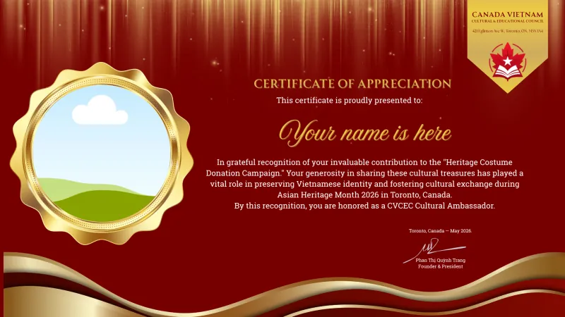

TORONTO, April 26, 2026 — The Canada Vietnam Cultural & Educational Council (CVCEC) has collected dozens of traditional Vietnamese garments, including ao dai, ao tac and ao nhat binh, through its Heritage Costume Donation Campaign.
The garments will be used in CVCEC cultural showcases, workshops and photo experiences in Toronto, starting with Asian Heritage Month in May 2026. Donors are recognized as CVCEC “cultural ambassadors.”
Partners
Le An Na, president of the Institute for Cultural Research and Development in Vietnam, has partnered with CVCEC to support and curate its cultural showcases for Asian Heritage Month 2026 in Toronto. Her institute carries out research and practical projects to protect and develop Vietnamese cultural traditions.
Designer Quang Hoa donated two new five-panel ngu than gown sets, one for men and one for women. Quang Hoa began working as a fashion designer in 2002 and spent 11 years in Ho Chi Minh City before returning to Hue in 2013 to focus on reviving the traditional five-panel gown. Visitors to CVCEC events in Toronto will be able to try on the gowns.

Donors
CVCEC thanked the following donors, who have become cultural ambassadors for the organization.


Nguyen Lien Huong
Vietnamese teacher, Hanoi

Tran Van Anh
English teacher, Hanoi
Sophie Minh Phuong Pham
Founder and principal, Sophie Language and Sophie Montessori, Toronto
Nguyen To Trinh
Retired civil servant

Nguyen Thi Bich Hang
Chair, Women’s Union of Sai Dong Ward, Long Bien, Hanoi

Phan Thi Nguyet Minh
Head of social work, Duc Giang General Hospital
All donor information and photos are shared with the donors’ permission.
CVCEC continues to accept ao dai and other traditional garments for its collection. To donate, email contact@cvcec.org or send a message on WhatsApp or Zalo to 647-897-2358.
Coming in May
In late May 2026, during Asian Heritage Month, CVCEC plans to show the garments in an interactive exhibition in Toronto and host try-on and photo sessions for visitors.
About CVCEC
The Canada Vietnam Cultural & Educational Council (CVCEC) is a federally incorporated not-for-profit organization based in Toronto. It offers Vietnamese language and culture classes for children, helps newcomer and international students settle into Canadian schools and connects education communities in Canada and Vietnam. More information is available at cvcec.org.
-30-
Media contact
Phan Thi Quynh Trang, founder and president
Canada Vietnam Cultural & Educational Council
contact@cvcec.org